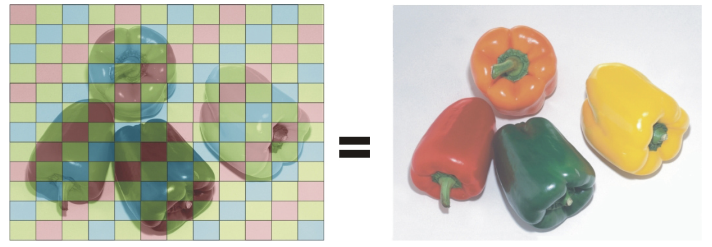
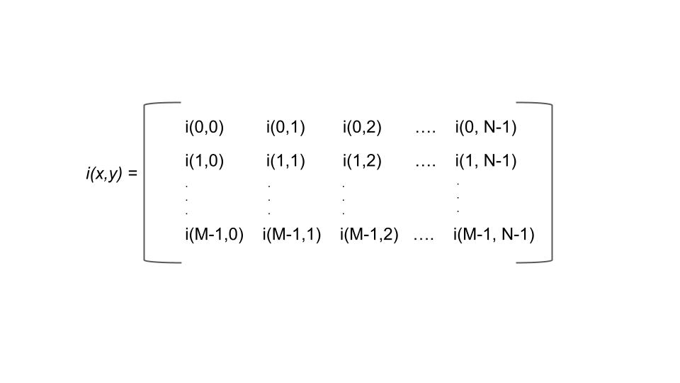
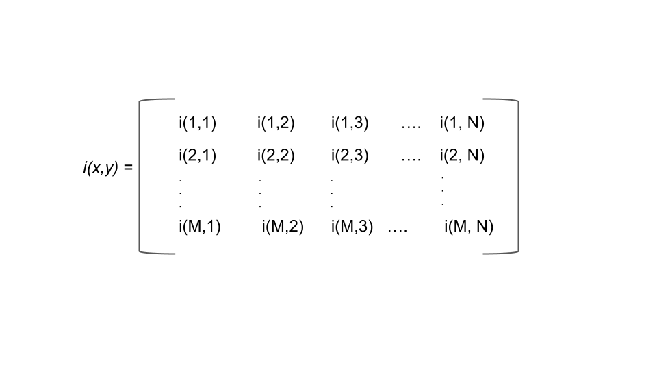
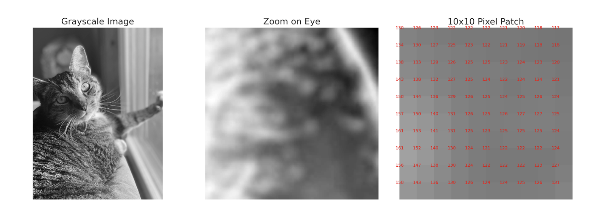
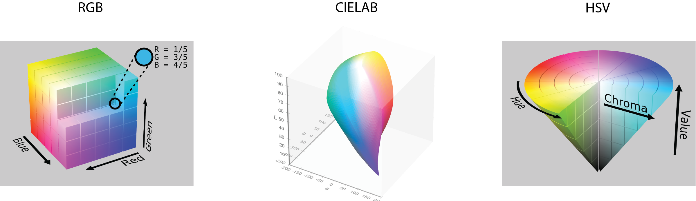
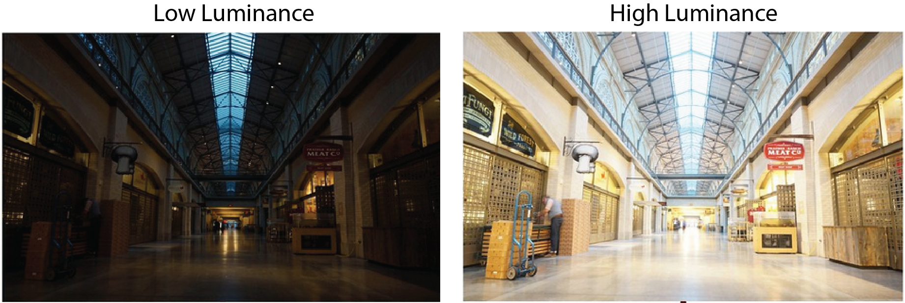
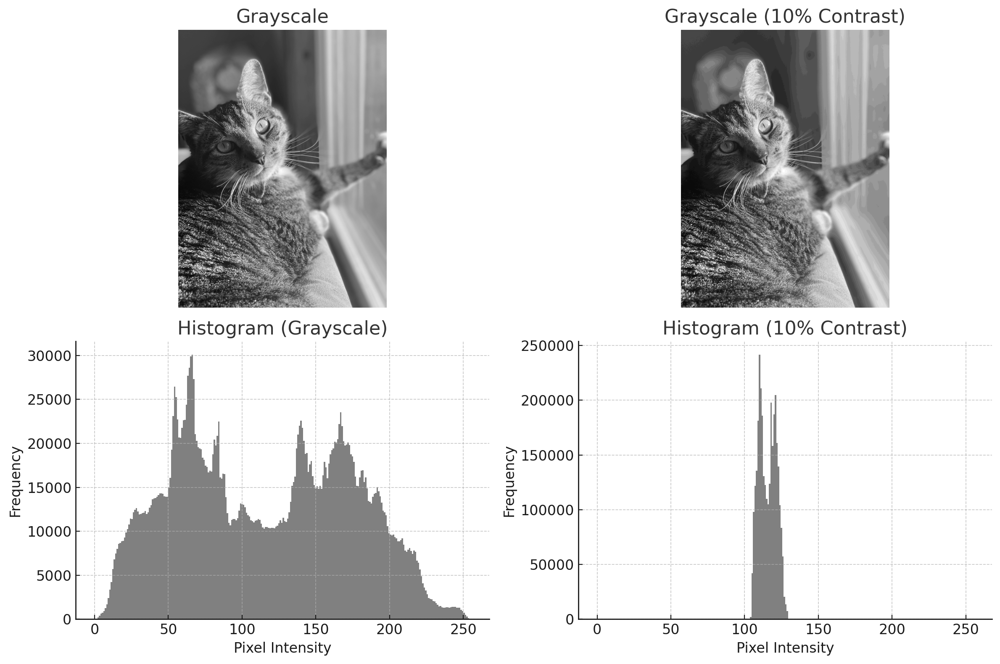
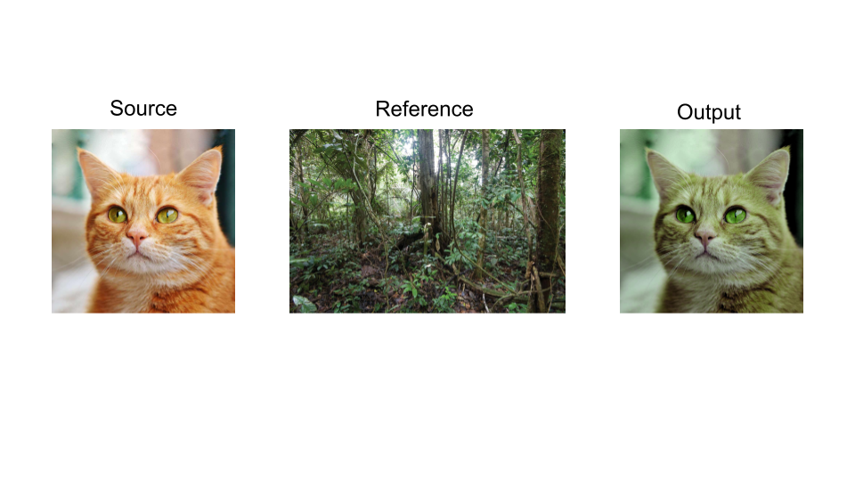
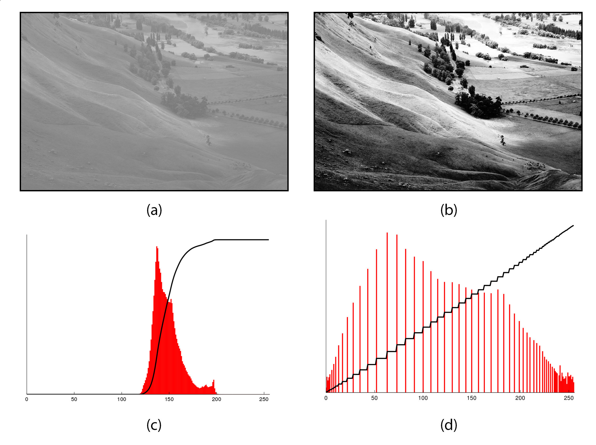

14 Image Processing
In a lab focused on vision research, basic knowledge about images is essential to our everyday work. You have likely captured hundreds of digital images. This chapter will tell you about how pictures are represented digitally, and how to do some basic manipulations such as resizing, and changing luminance and contrast.
Digital Cameras
Digital cameras capture images using a sensor, which is the electronic equivalent of film. The two most common types of sensors are CCD (Charge-Coupled Device) and CMOS (Complementary Metal-Oxide-Semiconductor), with CMOS being more common in modern cameras. Each sensor contains millions of tiny light-sensitive elements called pixels, which convert incoming light into electrical signals. Pixels are arranged as a matrix where the number of rows determine the image’s height and the number of columns give the image’s width. Most sensors use a color filter array called a Bayer filter to assign red, green, or blue filters to each pixel. Since each pixel only sees one color, the camera must reconstruct a full-color image through a process called demosaicing.

(Murray 1010, 2007)
The Bayer filter “assigns” each pixel to specialize in red, green, or blue much like the cone photoreceptors of the eye can be tuned to (roughly) red, green, and blue wavelengths.
Pixel Values
Digital images are essentially matrices composed of rows and columns of pixels (picture elements). You may be familiar with this term because cameras often advertise their number of megapixels. In general, the more pixels an image has, the smoother it will look. A larger number of pixels will result in a larger image, and images can be resized to meet a user’s needs.
Images are a series of pixels organized in a two-dimensional array, i(x,y). It represents the amplitude, or intensity of the pixel located at the x,y position.

(Made in house by VCL 2025)This is a visual demonstrating the two-dimensional array, the basic structure of an image. At each pixel there is an intensity level and specified location.
Note: in Matlab, since indexing starts at 1 instead of 0, the matrix would look something like the following:

(Made in house by VCL 2025)
But what about luminance? What range of numbers is used to represent the different light levels in an image? This depends on how granular you want to be. The number of possible values is determined in bits. A bit, or binary digit, is a data structure with two possible values, 0 or 1. Thus, a two-bit image would have four possible light values (two possibilities for each bit), a three-bit image would have eight possible values, etc. The most common representation is 8-bit, meaning 256 unique light levels. However, high-quality photographs can be represented in 16-bit (32,536 different levels).
Let’s consider an 8-bit image that is in black and white (we often call this “grayscale”). A pure black pixel would be represented as 0, while a pure white pixel would be represented with 255. For all of the shades of gray in between, smaller values represent darker shades. But what about color? Color is typically represented with three color channels: red, green, and blue. Assuming an 8-bit color depth, each of the three channels would be represented with a number between 0-255, representing the amount of that color at that pixel. Any arbitrary color can thus be described with a triplet of numbers. As a thought exercise, it’s helpful to consider how many unique colors can be described in this space to prove to yourself that a television or computer monitor advertising “millions of colors” is not deceiving you.

(VCL, 2025) (“Grayscale,” 2025)
(“Grayscale,” 2025)
Image File Formats
In theory, computers could store the value of each pixel in the image matrix. If this were the case, then all images of the same size would have the same file size. But you may have noticed on your computer that two images of the same width and height can have variable file sizes. Why is that?
An Apple iPhone 16 takes 48 megapixel photographs. This means that the image array is 8192 x 5464 pixels. Let’s imagine that our photograph is in color and represented with 8 bits of color depth. This would mean that the file size would be 8192 pixels x 5464 pixels x 3 color channels x 8 bits per channel = 1,074,266,112 bits of information! Let’s turn this into a more human-scale number. There are 8 bits per byte, and 1024^2 bytes in a megabyte. Therefore, this file would take up over 128 MB if stored directly! In actuality, images of this size typically take up 10-15 MB. What accounts for this difference?
The answer lies in how images are encoded and compressed. Most digital images are not stored as raw matrices of pixel values. Instead, they are saved in file formats like JPEG, PNG, or HEIC, each of which uses different strategies to reduce file size. These strategies rely on the fact that images contain redundancy—for example, areas of sky that are all the same shade of blue, or smooth gradients across a shadow. Compression algorithms can represent these patterns more efficiently, often using fewer bits than storing every pixel individually. There are two main types of image compression: lossless and lossy. Lossless formats (like PNG) preserve all of the original information, allowing the image to be perfectly reconstructed. Lossy formats (like JPEG and HEIC), on the other hand, discard some information that the algorithm predicts will be hard for the human eye to notice, such as subtle color shifts or fine texture. This reduces file size dramatically, but it can introduce compression artifacts and make the image less suitable for scientific analysis. In image processing, the type of image file matters. A RAW file, like those produced by professional cameras, contains minimally processed sensor data and is ideal for precise analysis or editing. A JPEG is much smaller and good for sharing, but sacrifices fine detail and accuracy. As we’ll see, choosing the right image format depends on what you want to do with the image and how much data you’re willing to lose.
Color Spaces
So far, we have considered color to be from a space of three channels, each from the red, green, and blue channels (RGB). This is a sensible choice, given that these colors are the primary colors of light and that human cones detect colors with cones that are roughly tuned to red, green, and blue wavelengths. However, this biological analogy is loose and RGB is not always the best format for analyzing or manipulating images, especially when we want to think about how colors appear to the human eye.
CIELAB Color
CIELab (Commission on Illumination) is the most useful color space if you want to make quantitative comparisons. Like RGB, CIELab is built on three channels: luminance (black to white), a (green to red) and b (blue to yellow). There are several advantages to this representation. First, by separating luminance from the other channels, we can adjust the overall brightness of a picture while leaving the colors the same. Second, the color opponent green-red and yellow-blue channels mimic the color opponency observed in the retina and lateral geniculate nucleus (LGN) of the visual system. Third, CIELAB is perceptually uniform, meaning that a change of the same amount in one of its dimensions (lightness, or chromatic components) corresponds to a roughly equal change in perceived color. This makes it a better choice when comparing how similar two colors look to a human observer.

(“RGB Color Spaces,” 2025) (Horvath, 2017) (SharkD Talk, 2010)HSV Color
The HSV color space (Hue, Saturation, Value) is another alternative, often used in computer vision and graphics. It separates the idea of color (hue) from how vivid it is (saturation) and how bright it is (value), which makes it easier to isolate or modify specific color properties.
Image Luminance and Contrast
In image processing, it’s often important to separate the structure of an image from its lighting conditions. Two key properties that influence how we perceive and analyze images are luminance, which reflects overall brightness, and contrast, which describes the differences in brightness across the image.
Luminance
Luminance refers to the brightness level of an image and is determined by how much white or black is mixed into the image. Maximum luminance is pure white, and minimum luminance is pure black. One often wants to know the mean luminance of an image. For a grayscale image, one can get this value by simply averaging the pixel values. For color images, the process depends on the color space you are using. For CIELAB space, one can compute the mean value of the luminance channel. For RGB, one would take a weighted average of the three color channels. This weighting accounts for how the human eye perceives brightness differently across these channels (the human eye is most sensitive to green light). In all cases, a luminance histogram can be created to assess the distribution of luminance values.

(VCL, 2025)
Contrast
Contrast is how much luminance levels vary across an image. High-contrast images have strong differences between light and dark areas, making edges and details more distinct, while low-contrast images appear flat or washed out. Contrast plays a major role in how easily we can perceive shapes, textures, and boundaries within a scene. In image processing, adjusting contrast can help enhance important features, improve visibility in poor lighting, or prepare an image for further analysis like edge detection or object recognition. Common techniques include contrast stretching, histogram equalization, and normalization, all of which aim to redistribute pixel intensities to make details stand out more clearly. Photo manipulation methods, such as Instagram filters, make use of these techniques to make more attractive images.

(VCL, 2025)
Normalizing Luminance and Contrast
In cognitive neuroscience, we often want to control for luminance and contrast because early visual system responses are sensitive to these values. One common approach is to adjust each image so that it has the same mean luminance and contrast. Mean luminance is typically set to be the mid-gray level (i.e., 128 on the 0-255 scale). Contrast can be computed in several ways, but root mean square (RMS) contrast is the most common choice. RMS contrast is simply the standard deviation of pixel intensity values. Therefore, a standardized set of images will always have the same mean luminance and RMS contrast.
Histogram matching is another way to do this: here, we adjust the pixel values of one image so that its histogram matches that of a reference image. This technique is useful for normalizing images from different sources or conditions, like lighting.
Here is an example:

(e.koukakis@gmail.com, 2023; OWP et al., 2022)The series of images above represents a visual of what the histogram matching process looks like. The cat on the left is the original image. The jungle scene in the middle is the reference image with a different luminance and contrast scheme. The cat on the right is the matched image and contains the same luminance and contrast values as the reference image.

(Capper, 2020)This figure demonstrates histogram equalization, a technique used to enhance image contrast. Panel (a) shows the original grayscale image with low contrast, while panel (b) shows the same image after equalization, revealing greater detail. Panels (c) and (d) show the histograms before and after processing, illustrating how pixel intensities are redistributed to span a wider range of brightness levels.
Pixel Coordinates
As we’ve discussed, images can generally be treated as matrices. There is one critical difference between a standard matrix and an image, however, and this is where the computer considers the origin (i.e., point 0,0). General matrices use Cartesian coordinates whereby the origin would either be in the lower left quadrant of the matrix, or at the matrix’s center. By contrast, some image indices are ordered from top to bottom and from left to right, making the origin at the top left point of the image.
Image Resolution and Resizing
Image resolution refers to the number of pixels in an image, and this determines how detailed the image can be. The more pixels, the higher the resolution, which results in more detail. To increase the resolution of an image, you add more pixels. However, this is not possible to do after a photograph is taken, despite what crime shows would lead us to believe. If you want to reduce the number of pixels, you can do this by either cropping or resizing the image. A crop is a section of the image. For example, taking the first 100 pixels from the height and width of an image, starting from the origin, would give us the image’s top-left corner. By contrast, resizing the image keeps all of the image’s content, but places it in a smaller canvas. Because this process involves estimating what pixel values would be if the image were smaller, care must be taken to ensure that a resized image is not stretched in this process.
Further Reading
We recommend the following sources for more information on this topic:
Machine Vision MIT OpenCourseware. Note: this is a bit more advanced, but the content is excellent.